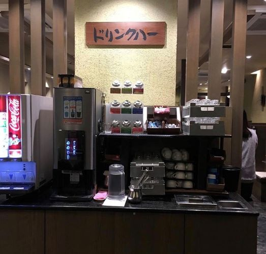
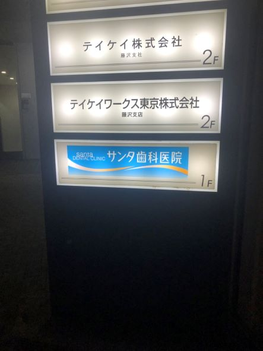
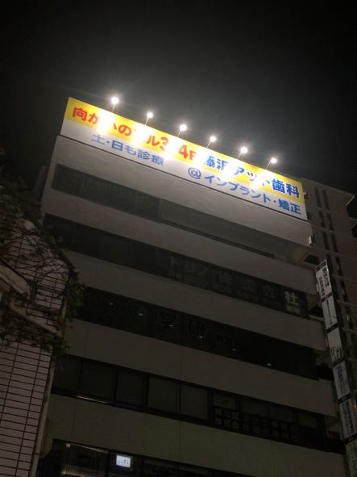

第２回課題
看板の撮影
看板1

2019年2月19日に神奈川県藤沢市の焼肉屋で自分が撮った写真。ぱっと見、よく見るドリンクバーの画像だが、案内の看板には「ドリンクハー」。
drink her 少し違うだけで意味が変わってしまう。
看板2

2021年10月11日に神奈川県藤沢市にて自分が撮影。株式会社の入るビルの1階に爽やかな色彩で目を引く看板。看板には「サンタ歯科医院」。「サンタ」という名前だが、看板はサンタを連想しやすい赤と白などの色ではなく、爽やかな青を基調とした色彩で作られている。
どちらかと言えば、”シカ”というよりはトナカイではないだろうか。
看板3

看板2と同日、同じエリアにて自分で撮影した写真。ビルの上にある大きく、多くの人の目に入る看板には「歯科」の文字。こんなに大きな看板で歯科医院の宣伝をしているのに驚いたがそれだけではない。この歯科は看板のビルに入っているのではなく、看板にもあるように向かいのビルに入っている。